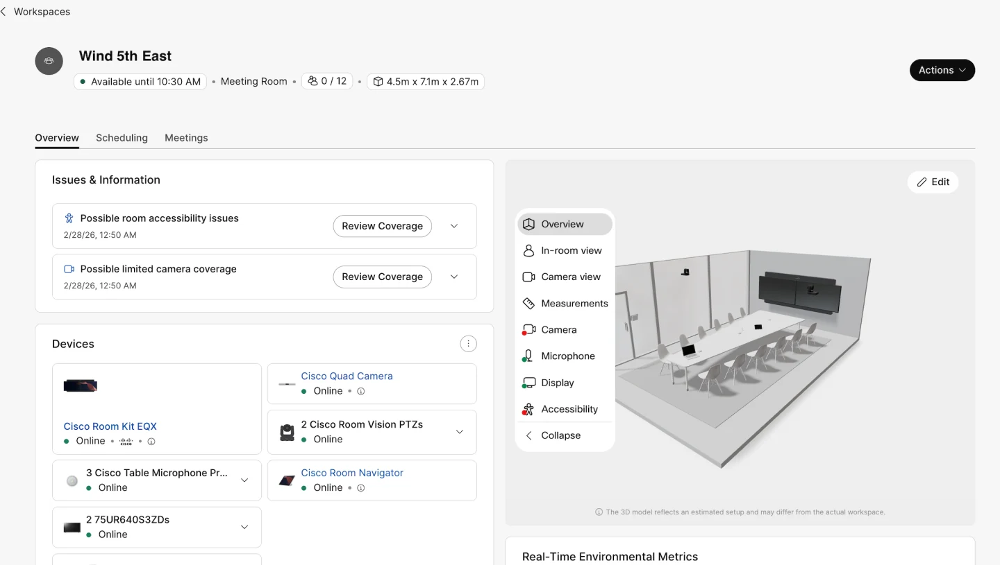

Cisco Workspace Advisor
My role
Product direction
Digital twin integration
AI room scanning UX
Challenge
Some rooms go unused, and nobody knows why.
The clues are spread across devices, bookings and layouts.
Checking and fixing them meant a site visit.
Impact
Coverage issues: from checking in person to seeing them in the system.
Room settings: from on-site setup to remote, with a 3D preview.
How might we bring every clue into one place, so admins can decide with confidence?


Learnings
Seeing beats reading
Admins understood a room's problems faster in 3D than in a regular text-based status.
Recognition builds trust
Admins act on a twin that looks like their room, and scanning builds it with no manual setup.
Scanning needs care
Scanning uses the room's own cameras, which can feel invasive.
The flow had to make clear what's scanned, when, and why.